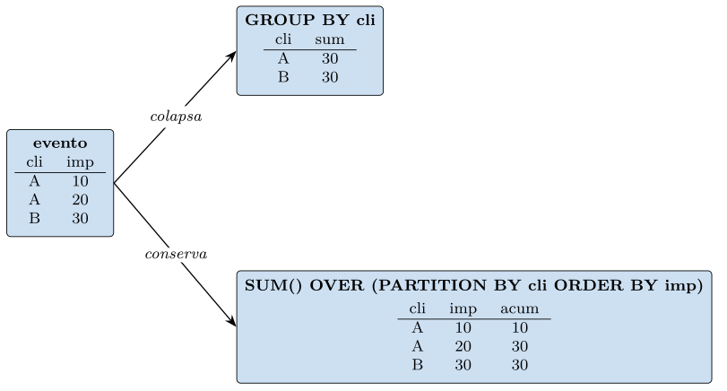
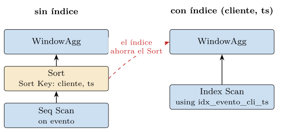

Capítulo 3. SQL: del DML declarativo a las extensiones
El capítulo 2 entregó dos formalismos —el álgebra y el cálculo relacional— y un teorema que los iguala. Ninguno de los dos es un lenguaje que se teclee en una terminal: son notación matemática. SQL es el lenguaje real que encarna ese sustrato y lo lleva a un sistema que se ejecuta. Su estructura básica —SELECT, FROM, WHERE— no es arbitraria: es la proyección, el producto y la selección del álgebra vestidos de sintaxis, y su talante es declarativo, heredado del cálculo, de modo que el usuario describe qué quiere y el optimizador del capítulo 1 decide cómo obtenerlo. Aprender SQL, visto así, no es memorizar palabras clave, sino reconocer bajo ellas los operadores ya conocidos.
Pero SQL es más que el álgebra con otra ropa, y el capítulo se organiza en torno a ese «más». Por un lado, arrastra la distancia entre el modelo y el lenguaje que el capítulo 2 anticipó: SQL opera sobre multiconjuntos, no conjuntos —admite filas duplicadas—, permite ordenar el resultado, y hereda la lógica trivaluada de los nulos, con sus sorpresas. Por otro, y más importante, SQL extiende el núcleo relacional justamente con lo que el álgebra de primer orden no alcanzaba: la agregación que cuenta y suma, las consultas recursivas que recorren cadenas de profundidad arbitraria —la clausura transitiva que el capítulo 2 declaró inexpresable—, y las funciones de ventana. Cada límite que allí marcamos reaparece aquí como una extensión del lenguaje. Y, por último, SQL descansa sobre un sistema de tipos extensible: los tipos compuestos, los arrays y el JSON son añadidos sobre el núcleo, y ese mismo mecanismo de extensión es el que, en la cuarta parte, acogerá el tipo vector sin que ello sea una ruptura. El capítulo aterriza, así, el formalismo del capítulo 2 y abre las tres puertas —agregación, recursión, tipos— por las que el modelo relacional crece más allá de sí mismo.
Los ejemplos se ejecutan sobre el PostgreSQL del repositorio (PostgreSQL Global Development Group 2024) y, donde el estándar y el dialecto difieren, se anota la diferencia; el lenguaje es de estándar ISO, pero vive en implementaciones concretas (Melton y Simon 2002).
DDL, DML y DCL: la anatomía del lenguaje
SQL no es un lenguaje monolítico, sino tres sublenguajes con propósitos distintos. El lenguaje de definición de datos (DDL) describe la estructura: crea y altera relaciones, tipos y restricciones. El lenguaje de manipulación (DML) consulta y modifica los datos. Y el lenguaje de control (DCL) gobierna quién puede hacer qué. Los tres realizan, en sintaxis, ideas que los capítulos previos ya fijaron: el DDL materializa el esquema conceptual del capítulo 1 y las restricciones de integridad del capítulo 2; el DML, el álgebra; el DCL, la función de seguridad del gestor.
SQL nació en los años setenta como SEQUEL, en el seno del proyecto System R de IBM, y se estandarizó por primera vez en 1986. Desde entonces el estándar ISO ha crecido por revisiones sucesivas que incorporaron justamente las extensiones de este capítulo: las reuniones externas y los tipos en SQL-92, las consultas recursivas y los tipos estructurados en SQL:1999 (Melton y Simon 2002), las funciones de ventana en SQL:2003, el JSON en SQL:2016 y las consultas de grafos de propiedades (SQL/PGQ) en SQL:2023 (ISO/IEC 2023). El estándar fija un núcleo común, pero cada sistema añade su dialecto: tipos propios, sintaxis de optimización, extensiones. El código de este libro es de PostgreSQL (PostgreSQL Global Development Group 2024), y donde usa algo no estándar se anota. La lección práctica es doble: lo esencial es portable porque descansa en el modelo relacional común, pero las extensiones —y el tipo vector será una— viven en implementaciones concretas, y conviene saber cuándo se pisa estándar y cuándo dialecto.
Definición de datos: DDL
Crear una relación es declarar su esquema —atributos y dominios— junto con las restricciones que toda instancia válida respetará. El listado 3.1 crea el esquema de juguete que el capítulo usa, heredero del de los capítulos 1 y 2.
CREATE TABLE autor (
id_autor INTEGER PRIMARY KEY,
nombre TEXT NOT NULL,
pais TEXT
);
CREATE TABLE libro (
id INTEGER PRIMARY KEY,
titulo TEXT NOT NULL,
anio INTEGER CHECK (anio BETWEEN 1450 AND 2100),
tema TEXT,
id_autor INTEGER REFERENCES autor (id_autor)
);Listado 3.1. DDL: el esquema con sus restricciones de integridad.
Cada cláusula es una restricción del capítulo 2 hecha sintaxis. PRIMARY KEY declara la clave primaria —e impone la integridad de entidad: no nula, única—. REFERENCES declara la clave ajena y, con ella, la integridad referencial: el gestor rechazará todo libro cuyo id_autor no exista en autor, y se negará a borrar un autor con libros salvo que se le indique qué hacer en cascada. CHECK expresa una restricción de dominio arbitraria —un año verosímil—, y NOT NULL, la prohibición de ausencia. No hay aquí ninguna lógica de validación dispersa por las aplicaciones, como en el fichero plano del capítulo 1: las reglas viven en el esquema, centralizadas, y el gestor las hace cumplir en cada operación. Declarar el esquema es, pues, declarar también qué hace que el dato sea correcto.
Evolución del esquema, índices y acciones referenciales
El esquema rara vez nace completo. ALTER TABLE permite modificarlo —añadir una columna, una restricción, un valor por defecto— sin recrear la relación, y es la forma sintáctica de las migraciones, esos cambios deliberados del esquema que el capítulo 2 distinguió de los cambios de instancia. Una migración bien hecha respeta la independencia lógica del capítulo 1: añadir una columna opcional no rompe las consultas existentes, que siguen viendo las que ya nombraban. Por eso el DDL es tan crítico como el DML: gobierna la pieza estable —el esquema— de la que cuelga todo lo demás.
Dos elementos del DDL conviene fijar desde ya. El primero es el índice: CREATE INDEX idx ON libro (anio) crea la estructura del nivel interno del capítulo 1 que el optimizador podrá usar para acelerar las consultas. El índice no cambia lo que la base contiene —no es dato del usuario— sino cómo se accede a él; es la palanca de la independencia física, y la práctica del capítulo lo hará visible en el plan de ejecución. El segundo son las acciones referenciales: al declarar una clave ajena se indica qué hacer cuando se borra o actualiza la fila referenciada. ON DELETE CASCADE borra en cascada los libros de un autor que se elimina; ON DELETE RESTRICT prohíbe borrar un autor con libros; ON DELETE SET NULL deja los libros huérfanos con la referencia nula. La elección codifica una regla del dominio —qué significa que desaparezca lo referenciado— y, de nuevo, la hace cumplir el gestor, no cada programa.
El índice merece más que una mención, porque es donde el capítulo 1 y la cuarta parte del libro se dan la mano. Un índice es una estructura auxiliar que acelera el acceso a ciertas consultas a cambio de espacio y de un coste de mantenimiento en cada escritura. No hay un índice universal: cada familia sirve a un tipo de consulta. El B-tree, el más común, mantiene las claves ordenadas y es óptimo para las comparaciones de igualdad y de rango y para entregar filas en orden —justo lo que la función de ventana de la práctica aprovechará—. El índice hash solo sirve para la igualdad, pero la resuelve en tiempo casi constante. El GiST y el GIN son índices generalizados, pensados para tipos no escalares: GIN indexa el contenido de un documento JSON o los elementos de un array; GiST sostiene datos geométricos y de texto. Y el BRIN resume bloques enteros, barato y eficaz cuando los datos están físicamente ordenados por el atributo.
Un índice puede, además, ser compuesto —sobre varios atributos, como el (cliente, ts) de la práctica—, parcial —solo sobre las filas que cumplen una condición— o de expresión —sobre el resultado de una función, no sobre una columna cruda—. El optimizador decide si usar un índice comparando el coste estimado de hacerlo frente al del barrido, exactamente como en el capítulo 1. La conexión que conviene retener mira a la cuarta parte: GiST y GIN existen porque PostgreSQL permite que un tipo nuevo traiga su propio método de acceso, y ese mismo mecanismo es el que, en el capítulo 15, sostendrá el índice HNSW de los vectores. El catálogo de familias de índices no se cierra con el B-tree: se amplía con cada tipo de dato que trae su forma de buscarse.
Manipulación de datos: DML
La consulta como álgebra vestida
El corazón del DML es la consulta SELECT, y su forma canónica se lee casi literalmente como una expresión del álgebra. El listado 3.2 recupera los títulos de los libros de geometría posteriores a 2010 junto con el nombre de su autor.
SELECT l.titulo, a.nombre
FROM libro l JOIN autor a ON l.id_autor = a.id_autor
WHERE l.anio > 2010
ORDER BY l.titulo;Listado 3.2. Una consulta SELECT y su lectura algebraica.
La correspondencia con el capítulo 2 es directa: el JOIN … ON es la reunión \(\bowtie\), el WHERE es la selección \(\sigma\), y la lista del SELECT es la proyección \(\pi\). La consulta entera denota \(\pi_{\mathit{titulo},\mathit{nombre}}(\sigma_{\mathit{anio}>2010}(\mathrm{Libro}
\bowtie\mathrm{Autor}))\). Conviene notar, sin embargo, que el orden en que se escriben las cláusulas no es el orden en que se evalúan: conceptualmente primero actúa el FROM (las relaciones y su reunión), luego el WHERE (la selección), después el SELECT (la proyección) y por último el ORDER BY. Y, como vimos, el optimizador es libre de reordenar físicamente cuanto preserve el resultado —empujar la selección, elegir el algoritmo de reunión—: la consulta dice qué, no cómo.
La reunión del listado 3.2 es una reunión interna (INNER JOIN): empareja las filas que casan y descarta las que no, como la reunión natural del capítulo 2 —un libro sin autor registrado, o un autor sin libros, no aparecen—. A menudo se quiere lo contrario: conservar las filas sin pareja, rellenando con nulos los atributos del lado que falta. Eso es la reunión externa, y es una de las fuentes más comunes de nulos en SQL.
SELECT a.nombre, l.titulo
FROM autor a LEFT JOIN libro l ON l.id_autor = a.id_autor;
-- un autor sin libros aparece con titulo NULLListado 3.3. Reunión externa por la izquierda: todos los autores, tengan libros o no.
La LEFT JOIN conserva todas las filas de la relación izquierda y, para las que no casan a la derecha, rellena con nulos; la RIGHT JOIN hace lo simétrico, y la FULL JOIN conserva las no emparejadas de ambos lados. La consecuencia conecta con la sección anterior: una reunión externa fabrica nulos donde no los había, y esos nulos arrastran la lógica trivaluada a los cálculos que sigan. Contar con COUNT(l.titulo) tras una LEFT JOIN no cuenta los autores sin libros —porque los agregados ignoran los nulos—, mientras que COUNT(*) sí los cuenta; la diferencia entre ambas cuentas es, de hecho, una forma idiomática de hallar los autores sin obra. La reunión externa es imprescindible, pero exige tener presente, otra vez, que el nulo que introduce no es un valor sino una ausencia.
SQL se aparta del modelo de conjuntos del capítulo 2 en dos puntos que conviene fijar para no llevarse sorpresas. El primero es que SQL opera sobre multiconjuntos: una consulta puede devolver filas duplicadas, y de hecho las devuelve salvo que se pida lo contrario. SELECT pais FROM autor repite el país tantas veces como autores lo compartan; SELECT DISTINCT pais recupera la semántica de conjunto del álgebra, eliminando duplicados —la misma deduplicación que la proyección \(\pi\) hacía gratis—. El duplicado no es un descuido del lenguaje: contarlos importa, y eliminarlos cuesta (exige ordenar o dispersar), así que SQL deja la decisión al usuario. El segundo apartamiento es el ORDER BY: el modelo no tiene noción de orden entre tuplas, pero el resultado de una consulta sí puede ordenarse para presentarlo. El orden es una propiedad de la salida, no de las relaciones.
Operaciones de conjunto y modificación del dato
Los operadores de conjunto del capítulo 2 tienen su sintaxis directa: UNION, INTERSECT y EXCEPT (la diferencia) combinan los resultados de dos consultas compatibles. Con el matiz multiconjunto de siempre: UNION elimina duplicados —recupera la semántica de conjunto—, mientras UNION ALL los conserva y, por no tener que deduplicar, es más barata. La distinción no es cosmética: UNION ALL evita un ordenado o una dispersión, y en consultas grandes esa diferencia se nota.
Modificar el dato son tres verbos. INSERT añade filas; UPDATE cambia las que cumplen una condición; DELETE las borra. Los tres operan en bloque, sobre todas las filas que casan a la vez, no una a una: un solo UPDATE libro SET anio = anio + 1 WHERE … corrige miles de filas en una operación, y esa es la forma idiomática y eficiente de modificar en SQL, frente al bucle fila a fila que la mentalidad procedimental tentaría a escribir. PostgreSQL añade el UPSERT —INSERT … ON CONFLICT … DO UPDATE—, que inserta o, si la clave ya existe, actualiza, resolviendo en una sentencia atómica la carrera entre comprobar y escribir. Toda modificación, además, ocurre dentro de una transacción —la unidad atómica del capítulo 5—, de modo que un UPDATE que toca mil filas las cambia todas o ninguna.
Esa última frase esconde una de las garantías capitales del capítulo 1, que el capítulo 5 desarrollará y que aquí conviene nombrar. Las sentencias de modificación no flotan sueltas: se agrupan en transacciones, delimitadas por BEGIN y COMMIT (o ROLLBACK para deshacer), y la transacción es atómica —se aplica entera o no se aplica—. Transferir un préstamo de un socio a otro, que son un borrado y una inserción, debe ocurrir de golpe: si el sistema cae entre ambos, la transacción no confirmada se deshace y la base queda coherente. SQL expone, además, niveles de aislamiento que gradúan cuánto se protege una transacción de las que corren a la vez, un compromiso entre coherencia y concurrencia que el capítulo 5 formaliza. Por ahora basta retener que toda modificación vive dentro de una transacción, y que esa es la razón de que un UPDATE masivo sea seguro pese a tocar miles de filas.
Los nulos muerden: la lógica trivaluada en la práctica
La lógica trivaluada que el capítulo 2 introdujo deja de ser una sutileza teórica en cuanto se escribe SQL. El WHERE conserva una fila solo si su condición es verdadera; si la condición es desconocida —porque compara con un nulo—, la fila se descarta. De ahí la regla operativa: para preguntar por la ausencia hay que usar IS NULL, nunca = NULL, porque anio = NULL no es verdadero ni falso, sino desconocido, y no selecciona nada. El listado 3.4 muestra la trampa clásica.
-- NO encuentra los libros sin anio: "= NULL" da siempre desconocido
SELECT * FROM libro WHERE anio = NULL; -- 0 filas, siempre
-- correcto:
SELECT * FROM libro WHERE anio IS NULL;
-- sorpresa de NOT IN con un nulo en la subconsulta:
SELECT * FROM libro
WHERE id_autor NOT IN (SELECT id_autor FROM autor); -- vacio si hay NULLListado 3.4. El nulo y la lógica trivaluada: una trampa frecuente.
La última consulta es la más insidiosa. Si la subconsulta devuelve algún nulo, NOT IN se evalúa comparando con cada valor, y una comparación con el nulo da desconocido; basta un desconocido para que la condición entera deje de ser verdadera, y la consulta devuelve cero filas en silencio. Es la ley del tercio excluido rota que el capítulo 2 anticipó, ahora con consecuencias prácticas: una consulta aparentemente correcta que, ante un solo nulo, miente. La defensa es conocer el mecanismo —toda comparación con nulo es desconocido— y preferir NOT EXISTS, que no padece el problema.
Control de acceso y vistas: DCL
El tercer sublenguaje es breve pero realiza una función capital del capítulo 1: la seguridad. GRANT SELECT ON libro TO consulta concede a un rol el derecho a leer una relación; REVOKE lo retira. Combinado con las vistas del capítulo 2 —que exponen solo parte del esquema—, el control de acceso permite que cada aplicación vea y modifique exactamente lo que le corresponde, ni más ni menos. La seguridad no se programa en cada aplicación: se declara en el gestor, centralizada como las demás garantías.
La vista del capítulo 2 —una relación derivada, un nombre para una consulta— tiene su sintaxis en SQL: CREATE VIEW catalogo AS SELECT … define una vista virtual que se evalúa cada vez que se consulta, siempre al día. Es la realización del nivel externo del capítulo 1: cada aplicación consulta su vista sin saber qué expresión hay debajo, y si el esquema base cambia de un modo que la definición de la vista absorbe, la aplicación no se entera.
Cuando reevaluar la consulta en cada acceso resulta caro, SQL ofrece la vista materializada: CREATE MATERIALIZED VIEW guarda el resultado como una tabla, rápida de leer, que hay que refrescar con REFRESH cuando los datos base cambian. Es exactamente el compromiso que el capítulo 2 anticipó —frescura frente a coste— y que reaparecerá, con otro ropaje, en la cuarta parte: un índice vectorial es, en el fondo, una estructura materializada que acelera la consulta a cambio de tener que reconstruirse cuando los vectores cambian. La tensión entre calcular al vuelo y cachear el resultado no es exclusiva de los vectores; vive ya aquí, en una vista materializada de SQL.
Subconsultas, agregación y funciones de ventana
Aquí SQL deja de ser trivial. Las tres construcciones de esta sección son las que separan al que conoce la sintaxis del que sabe consultar, y dos de ellas —la agregación y la recursión— son precisamente las que rebasan el álgebra de primer orden del capítulo 2.
Subconsultas
Una subconsulta es una consulta anidada dentro de otra. Las hay de varias formas: la escalar, que devuelve un único valor y se usa donde cabría una constante; la de lista, tras IN, que comprueba pertenencia a un conjunto; y la correlacionada, que se refiere a la fila de la consulta externa y se reevalúa para cada una. Esta última es la más expresiva, y con EXISTS expresa la cuantificación que el álgebra codificaba con la división.
SELECT a.nombre
FROM autor a
WHERE EXISTS (SELECT 1 FROM libro l
WHERE l.id_autor = a.id_autor
AND l.tema = 'geometria');Listado 3.5. Una subconsulta correlacionada con EXISTS: autores con al menos un libro de geometría.
La consulta «socios que han leído todos los libros exigidos» —la división del capítulo 2— se escribe con una doble negación de EXISTS: no hay ningún libro exigido que el socio no haya leído. Esa traducción del «para todos» a un «no existe uno que no» es exactamente cómo el álgebra realizaba la división con diferencias, y muestra que SQL, pese a su apariencia, sigue anclado en la lógica de primer orden del cálculo relacional. El listado 3.6 lo escribe.
SELECT s.id_socio
FROM socio s
WHERE NOT EXISTS ( -- no hay un libro exigido...
SELECT 1 FROM exigido e
WHERE NOT EXISTS ( -- ...que el socio no haya leido
SELECT 1 FROM lectura l
WHERE l.id_socio = s.id_socio
AND l.id_libro = e.id_libro));Listado 3.6. La división como doble NOT EXISTS: socios que han leido todos los libros exigidos.
Léase de fuera adentro: un socio entra en el resultado si no existe ningún libro exigido para el cual no exista una lectura suya de ese libro; es decir, si ha leído todos. Las dos negaciones anidadas son la forma en que la lógica de primer orden expresa el «para todos», y el motivo de que la división no tenga una palabra clave propia en SQL: no hace falta, porque el cuantificador universal se reduce, mecánicamente, a dos «no existe». El capítulo 2 lo anticipó al llamar a la división el operador más sutil; aquí se ve por qué la sutileza sobrevive a la sintaxis.
Una subconsulta puede aparecer también en el FROM, como una relación más: es una tabla derivada, el equivalente sintáctico de una relación intermedia del álgebra. Cuando esa relación intermedia se reutiliza o se quiere nombrar para legibilidad, SQL ofrece las expresiones de tabla comunes (CTE), introducidas con WITH: dan nombre a una consulta para usarla después, descomponiendo una consulta compleja en pasos legibles, como las relaciones intermedias con nombre de una demostración. Una CTE no recursiva es azúcar sintáctico —el optimizador suele poder integrarla en la consulta principal—, pero su variante WITH RECURSIVE, que veremos enseguida, no lo es: añade poder expresivo que el resto de SQL no tiene.
Una subconsulta correlacionada tiene un coste que conviene entender. Como se reevalúa para cada fila de la consulta externa, una lectura ingenua sugiere un coste del orden del producto de los tamaños —cuadrático—, y escrita a mano así sería. Pero el optimizador rara vez la ejecuta de ese modo: reconoce el patrón y lo reescribe como una semirreunión (semijoin), una reunión que solo comprueba la existencia de pareja sin duplicar filas, y la realiza con los mismos algoritmos eficientes —dispersión, índice— que cualquier reunión. Es, una vez más, la completitud del capítulo 2 en acción: el usuario escribe la forma que le resulta clara —EXISTS correlacionado— y el sistema elige una ejecución equivalente y barata. Por eso conviene escribir la consulta legible y fiarse del optimizador, en lugar de retorcerla por un miedo al coste que casi nunca se materializa.
Agregación: contar lo que el álgebra no contaba
El capítulo 2 marcó un límite tajante: el álgebra relacional no sabe contar ni sumar. SQL levanta ese límite con las funciones de agregación —COUNT, SUM, AVG, MIN, MAX— y la cláusula GROUP BY, que parte la relación en grupos y aplica la agregación a cada uno. El listado 3.7 cuenta los libros de cada autor y se queda con los prolíficos.
SELECT a.nombre, COUNT(*) AS n_libros
FROM autor a JOIN libro l ON l.id_autor = a.id_autor
GROUP BY a.id_autor, a.nombre
HAVING COUNT(*) > 3
ORDER BY n_libros DESC;Listado 3.7. Agregación: libros por autor, filtrando por la cuenta con HAVING.
Hay aquí dos novedades sobre el álgebra. La primera es la agregación misma, que colapsa un grupo de tuplas en una sola fila de resumen —una operación que reduce la cardinalidad de un modo que ningún operador del álgebra de primer orden podía—. La segunda es HAVING, que filtra grupos por una condición sobre el agregado, frente a WHERE, que filtra filas antes de agrupar. La distinción importa y es fuente de errores: WHERE actúa antes del GROUP BY, sobre las tuplas individuales; HAVING, después, sobre los grupos ya formados. Filtrar por la cuenta exige HAVING, porque la cuenta no existe hasta que el grupo se ha formado.
Dos detalles de la agregación enlazan con los nulos del capítulo 2 y conviene fijarlos. Primero: los agregados ignoran los nulos. AVG(anio) promedia solo los años conocidos, y COUNT(anio) cuenta solo los no nulos, frente a COUNT(*) que cuenta todas las filas; la diferencia entre ambas cuentas es, de nuevo, el número de nulos. Segundo: muchos agregados admiten DISTINCT —COUNT(DISTINCT pais) cuenta países distintos— y, en el SQL moderno, una cláusula FILTER que restringe qué filas entran en cada agregado, de modo que una sola consulta puede calcular varios agregados sobre subconjuntos distintos a la vez. Son refinamientos, pero ilustran que la agregación, ausente por completo del álgebra de primer orden, llega a SQL con una riqueza considerable.
Funciones de ventana, recursión y análisis
La agregación con GROUP BY resume a costa de perder el detalle: tras agrupar, las filas individuales desaparecen. A menudo se quiere lo contrario —conservar cada fila y, además, anexarle un cálculo sobre su grupo—: la posición de cada libro en el ranking de su autor, la suma acumulada de préstamos en el tiempo, la diferencia con la fila anterior. Para eso están las funciones de ventana, una de las extensiones más potentes del SQL moderno. Una función de ventana calcula un agregado sobre un conjunto de filas —la «ventana» relacionada con la fila actual— pero, a diferencia del GROUP BY, no colapsa: cada fila de entrada produce una fila de salida, con la columna agregada añadida (figura 3.1).

GROUP BY frente a función de ventana sobre la misma entrada. El primero colapsa cada grupo en una fila de resumen; la segunda conserva todas las filas y añade una columna con el agregado (aquí, la suma acumulada por cliente). Misma agregación, dos formas: resumir o enriquecer.Las funciones de ventana piden un dominio con orden temporal, de modo que los ejemplos que siguen dejan el catálogo de autores y libros por una tabla de movimientos, evento(cliente, ts, importe) —un cliente, un instante ts y un importe—, que la práctica del capítulo crea y puebla. Sobre ella, la suma acumulada del importe por cliente se escribe así:
SELECT cliente, ts, importe,
SUM(importe) OVER (PARTITION BY cliente ORDER BY ts) AS acum,
ROW_NUMBER() OVER (PARTITION BY cliente ORDER BY ts) AS n
FROM evento;Listado 3.8. Una función de ventana: suma acumulada del importe por cliente, en orden temporal.
La cláusula OVER define la ventana: PARTITION BY la divide en grupos —como un GROUP BY que no colapsa— y ORDER BY fija el orden dentro de cada grupo, sobre el que se acumula. Funciones como ROW_NUMBER, RANK o LAG —que mira la fila anterior— solo cobran sentido con ese orden. Las funciones de ventana son el caballo de batalla de la analítica sobre SQL, y su coste tiene una estructura clara que la práctica del capítulo examinará en el plan: la ventana necesita las filas ordenadas por partición, y un índice que ya las entregue así elimina el nodo de ordenación —aunque, como veremos, suprimir ese nodo no implica siempre menor latencia—.
La ventana admite, además, un marco (frame) que precisa qué filas, dentro de la partición y relativas a la actual, entran en el cálculo. Por omisión, una ventana con ORDER BY acumula desde el inicio de la partición hasta la fila actual —de ahí la suma acumulada—, pero ROWS BETWEEN 2 PRECEDING AND CURRENT ROW la restringe a una ventana deslizante de tres filas, con la que se calcula, por ejemplo, una media móvil. El listado 3.9 ilustra la suma acumulada con dos clientes y unos pocos eventos construidos a mano —no es la salida de la práctica, que corre sobre una tabla mayor, sino una muestra mínima para ver la mecánica—: nótese que la columna acum crece dentro de cada cliente y se reinicia al cambiar de partición, y que el número de filas de salida es el de entrada —la ventana no colapsa—.
cliente ts importe acum n
------- --- ------- ----- -
A 10 30 30 1
A 14 20 50 2
A 21 50 100 3
B 9 40 40 1
B 17 10 50 2Listado 3.9. Ilustración construida de la suma acumulada (dos clientes, unos pocos eventos), no la salida de la práctica: la columna acum crece dentro de cada partición.
El límite más sonado del capítulo 2 fue la clausura transitiva: el álgebra de primer orden no puede recorrer una cadena de profundidad arbitraria, así que no expresa «todos los subordinados, directos e indirectos, de un jefe». SQL lo resuelve con las consultas recursivas, mediante WITH RECURSIVE, que itera una consulta hasta que no añade filas nuevas —un cálculo de punto fijo, exactamente la iteración no acotada que faltaba—.
WITH RECURSIVE subordinados AS (
SELECT empleado FROM supervisa WHERE jefe = 'ada'
UNION
SELECT s.empleado
FROM supervisa s JOIN subordinados r ON s.jefe = r.empleado
)
SELECT * FROM subordinados;Listado 3.10. WITH RECURSIVE: la clausura transitiva que el algebra no podia expresar.
La estructura tiene dos partes: un caso base —los subordinados directos— y un paso recursivo que, partiendo de los ya hallados, encuentra los del siguiente nivel; la UNION acumula y, al deduplicar, garantiza que la iteración termine cuando deja de aparecer nadie nuevo. Esto es Datalog —el operador de punto fijo que el capítulo 2 mencionó— dentro de SQL, y es la prueba de que el lenguaje trasciende su núcleo de primer orden. Conviene retener la conexión con la segunda parte: una consulta recursiva es, en el fondo, un recorrido de grafo expresado en SQL, y su incomodidad sintáctica —comparada con la naturalidad de un lenguaje de grafos— es uno de los argumentos que motivan las bases de datos de grafo del capítulo 8. El propio estándar dio un paso hacia esa naturalidad al incorporar en SQL:2023 una sintaxis nativa de emparejamiento de patrones de grafo, SQL/PGQ (ISO/IEC 2023).
Las piezas de esta sección rara vez actúan solas; una consulta analítica real las combina. El listado 3.11 responde a «para cada país, el autor con más libros y cuántos tiene», y encadena casi todo lo visto: una CTE que agrega libros por autor, una función de ventana que clasifica los autores dentro de cada país, y una selección final que se queda con el primero de cada uno.
WITH por_autor AS (
SELECT a.id_autor, a.pais, COUNT(*) AS n
FROM autor a JOIN libro l ON l.id_autor = a.id_autor
GROUP BY a.id_autor, a.pais
)
SELECT pais, id_autor, n
FROM (
SELECT pais, id_autor, n,
RANK() OVER (PARTITION BY pais ORDER BY n DESC) AS r
FROM por_autor
) q
WHERE r = 1;Listado 3.11. Una consulta analítica: el autor mas prolifico de cada pais.
Léase de dentro afuera, como una expresión del álgebra: la CTE por_autor reúne y agrega —el conteo que el álgebra no tenía—; la ventana RANK() OVER (PARTITION BY pais ORDER BY n DESC) ordena los autores dentro de cada país sin colapsar las filas; y el WHERE r = 1 se queda con el de mayor cuenta de cada país. Tres extensiones —agregación, tabla derivada, ventana— al servicio de una sola pregunta, y todas declarativas: el usuario describe el resultado y el optimizador decide el plan, reuniendo, agrupando y ordenando en el orden que estime barato. Es SQL en su registro analítico, y la mejor muestra de cuánto ha crecido el lenguaje sobre el núcleo relacional del capítulo 2.
SQL procedural: PL/pgSQL
Todo lo anterior es declarativo: se describe el resultado y el sistema lo construye, operando sobre conjuntos enteros de una vez. Hay tareas, sin embargo, que no se dejan expresar así —lógica condicional compleja, bucles, procesos por pasos con estado— y para las que SQL ofrece una extensión procedimental. En PostgreSQL es PL/pgSQL, un lenguaje imperativo que vive dentro del gestor y se incrusta en funciones y disparadores.
CREATE FUNCTION categoria_autor(n INTEGER) RETURNS TEXT AS $$
BEGIN
IF n > 10 THEN RETURN 'prolifico';
ELSIF n > 0 THEN RETURN 'activo';
ELSE RETURN 'sin obra';
END IF;
END;
$$ LANGUAGE plpgsql;Listado 3.12. Una funcion en PL/pgSQL: logica procedimental dentro del gestor.
Una función encapsula lógica reutilizable que se invoca desde una consulta; un disparador (trigger) asocia una función a un evento —antes o después de una inserción, una actualización, un borrado— y permite, por ejemplo, mantener un registro de auditoría o derivar un valor automáticamente. El poder tiene un precio que conviene declarar: lo procedimental opera a menudo fila a fila, y un bucle que recorre una tabla con PL/pgSQL casi siempre es más lento que la consulta declarativa equivalente, que el optimizador puede ejecutar en bloque. La regla práctica es preferir lo declarativo y reservar lo procedimental para lo que de verdad no se expresa en una consulta —la misma lección que la segunda parte repetirá al elegir entre pedir al motor o programar en el cliente—.
El disparador (trigger) merece su ejemplo, porque es la forma de que el gestor reaccione a los cambios. El listado 3.13 mantiene al día un contador de libros por autor sin que ninguna aplicación tenga que recordarlo: la función se ejecuta automáticamente tras cada inserción en libro.
CREATE FUNCTION inc_contador() RETURNS TRIGGER AS $$
BEGIN
UPDATE autor SET n_libros = n_libros + 1
WHERE id_autor = NEW.id_autor;
RETURN NEW;
END;
$$ LANGUAGE plpgsql;
CREATE TRIGGER tras_insertar_libro
AFTER INSERT ON libro
FOR EACH ROW EXECUTE FUNCTION inc_contador();Listado 3.13. Un disparador: mantener un contador derivado de forma automatica.
El disparador centraliza en el gestor una regla que, de otro modo, cada aplicación que insertara libros tendría que recordar —y alguna olvidaría—, con el consiguiente riesgo de un contador inconsistente. Es la filosofía del capítulo 1 llevada a la lógica derivada: lo que debe cumplirse siempre, que lo imponga el gestor. El precio, otra vez, es que los disparadores se ejecutan fila a fila y pueden encarecer las inserciones masivas; como todo lo procedimental, se usan con criterio.
Tipos compuestos y el modelo objeto-relacional
Llegamos al apartado que más lejos mira. El modelo relacional puro exige atributos atómicos —la primera forma normal del capítulo 2—, pero los sistemas reales hace décadas que admiten tipos más ricos, y entender ese sistema de tipos extensible es la antesala de toda la cuarta parte.
PostgreSQL ofrece, sobre los tipos escalares, una jerarquía de tipos compuestos. Los dominios son tipos escalares con restricciones (un codigo_postal es un texto que cumple un patrón). Los arrays permiten un atributo con varios valores ordenados. Los tipos compuestos agrupan varios campos en uno solo, como una tupla anidada. Y el JSON —en su forma binaria JSONB— guarda documentos de estructura flexible dentro de una columna, con operadores propios para navegarlos e índices GIN para buscarlos. Cada uno de estos tipos relaja, de un modo controlado, la atomicidad estricta, y cada uno llegó como una extensión del sistema, no como una reescritura del núcleo.
CREATE TABLE obra (
id INTEGER PRIMARY KEY,
temas TEXT[], -- array: varios valores ordenados
meta JSONB -- documento de estructura flexible
);
-- operadores propios de cada tipo:
SELECT * FROM obra WHERE 'geometria' = ANY (temas); -- array
SELECT * FROM obra WHERE meta->>'idioma' = 'es'; -- JSON
CREATE INDEX idx_meta ON obra USING GIN (meta); -- indice GINListado 3.14. Tipos extendidos: un array y un documento JSON, con sus operadores e índice.
Cada tipo del listado 3.14 trae las tres piezas que definen a un tipo extendido: una representación (TEXT[], JSONB), unos operadores propios (ANY para el array, ->> para navegar el JSON) y un índice que los acelera (GIN). Reténgase ese trío —tipo, operadores, índice—, porque es el patrón exacto que el vector seguirá: el tipo vector, los operadores de distancia y el índice HNSW. Lo que aquí se ve con el JSON, allí se verá con los embeddings; la maquinaria de extensión es la misma.
En el extremo más sencillo del sistema de tipos están los dominios y los enumerados, que merecen una mención porque encarnan una idea: el tipo como contrato. Un dominio es un tipo escalar con una restricción incorporada —CREATE DOMAIN anio_valido AS INTEGER CHECK (VALUE BETWEEN 1450 AND 2100)—, de modo que la regla viaja con el tipo y no hay que repetir el CHECK en cada tabla que lo use. Un enumerado fija un conjunto cerrado de valores admitidos —CREATE TYPE formato AS ENUM (’tapa dura’, ’bolsillo’, ’digital’)—, que el gestor hace cumplir. Ambos trasladan al sistema de tipos lo que de otro modo serían restricciones dispersas, y refuerzan la lección del capítulo 1: cuanto más sepa el gestor sobre la forma del dato, menos tiene que recordar cada aplicación. El tipo no es solo un formato de almacenamiento; es un contrato que el motor garantiza.
Esa capacidad de añadir tipos nuevos sin tocar el motor es la herencia del modelo objeto-relacional, cuyo origen está en el sistema POSTGRES de Stonebraker (Stonebraker y Rowe 1986). Su idea rectora: un tipo de dato no es algo cerrado que el sistema ofrezca de fábrica, sino algo que se define — con su representación, sus operadores y, crucialmente, su soporte de indexación—. PostgreSQL expone interfaces de método de acceso (como GiST y GIN) precisamente para que un tipo nuevo pueda traer su propio índice, del mismo modo que el B-tree sirve a los escalares ordenables.
Observación. Aquí se cierra el arco que apunta a la cuarta parte. Cuando, en el capítulo 14, aparezca el tipo vector de la extensión pgvector, no será una ruptura del modelo relacional, sino un ejemplo más de su extensibilidad: un tipo nuevo (vector), con sus operadores de distancia (<-> para la euclídea, <=> para el coseno) y su método de acceso propio (un índice HNSW sobre la interfaz de PostgreSQL), añadido sobre el mismo sistema de tipos que ya acogió el JSON y los arrays. El igual a del álgebra convivirá con el cercano a de la distancia como dos operadores sobre tipos distintos del mismo motor. La búsqueda vectorial no llega de fuera del mundo relacional: crece desde su sistema de tipos.
El procesamiento de una consulta
Conviene ahora juntar las piezas y ver el camino completo que recorre una consulta desde el texto que el usuario escribe hasta las filas que recibe, porque ese camino es la completitud del capítulo 2 puesta en marcha y el marco en el que la práctica del capítulo examinará el plan. Son cuatro etapas.
Primero, el análisis sintáctico: el texto SQL se valida contra la gramática y se comprueba contra el catálogo del capítulo 1 —que las tablas y columnas existan, que los tipos cuadren—, produciendo un árbol de la consulta. Segundo, la reescritura: se expanden las vistas (sustituyendo cada vista por su definición, según el capítulo 2) y se aplican reglas, dejando una consulta en términos de las relaciones base. Tercero, la optimización: la consulta se traduce a una expresión del álgebra y el optimizador explora expresiones equivalentes —empujando selecciones, eligiendo el orden de las reuniones y, para cada operador lógico, un operador físico— guiándose por las estadísticas del catálogo para estimar costes; el resultado es un plan de ejecución. Cuarto, la ejecución: el motor recorre el plan, normalmente como un flujo de tuplas que asciende de las hojas a la raíz.
Las dos etapas centrales son las del capítulo 2 hechas software: la traducción del SQL declarativo a álgebra realiza la equivalencia del teorema de Codd, y la optimización aplica las leyes algebraicas para reescribir. El usuario, gracias a la completitud, escribe lo que le resulta natural; el sistema busca un plan barato —bueno según su modelo de coste, no necesariamente el óptimo absoluto—. La orden EXPLAIN de la práctica abre justamente esta caja: pide al motor el plan elegido sin ejecutarlo, y en él se leen las decisiones —qué índice usa, en qué orden reúne, dónde ordena— que el capítulo 1 ya nos había mostrado para una consulta simple y que aquí gobiernan una con funciones de ventana.
Práctica: SQL que se ejecuta y se explica
La práctica cierra el capítulo poniendo a trabajar lo anterior sobre el PostgreSQL del repositorio. El módulo src/cap03_sql_ventana.py crea una tabla sintética de eventos, ejecuta la consulta de ventana del listado 3.8 —la suma acumulada por cliente en orden temporal— y pide su plan de ejecución con y sin un índice B-tree sobre (cliente, ts). Como manda la convención, anuncia los recursos —aquí PostgreSQL y la CPU, nunca la GPU—, avisa antes de poblar la tabla y muestra progreso durante la carga.
Por qué el índice cambia el plan
La predicción, declarada antes de mirar el plan, sale de la estructura de la consulta. Una función de ventana con PARTITION BY cliente ORDER BY ts necesita las filas ordenadas por cliente y, dentro de cada cliente, por tiempo. Sin un índice adecuado, el motor debe ordenar la tabla entera antes de acumular: un nodo Sort de coste estimado del orden de \(N\log N\). Con un índice B-tree sobre (cliente, ts), las filas ya están disponibles en ese orden, y el motor las recorre sin ordenar: el Sort desaparece del plan. La predicción, pues, no es sobre el reloj sino sobre la forma del plan —un nodo menos—, y es la misma lógica de la decisión barrido/índice del capítulo 1, ahora sobre el coste de ordenar en vez del de filtrar.
El módulo lo comprueba pidiéndole a PostgreSQL el plan con EXPLAIN, con el índice y sin él, sobre la misma consulta de ventana (listado 3.8, idéntica en ambos casos). Sin el índice, el plan ordena explícitamente antes de calcular la ventana; con él, lee directamente del índice y el Sort desaparece (listado 3.15, figura 3.2).
sobre PostgreSQL~16.14." label="lst:explain"}
-- sin indice: hay que ordenar para la ventana
WindowAgg
-> Sort
Sort Key: cliente, ts
-> Seq Scan on evento
-- con indice sobre (cliente, ts): se lee en orden, sin Sort
WindowAgg
-> Index Scan using idx_evento_cli_ts on evento
Sort para ordenar por (cliente, ts) antes de la WindowAgg; con el índice B-tree sobre esas columnas, lee en orden y el Sort desaparece. Las tuplas ascienden de la hoja a la raíz. Es la estructura del listado 3.15, hecha visible. Resaltar el Sort marca el nodo que el índice suprime, no un coste dominante: como se ve enseguida, suprimirlo cambia el plan pero no implica, por sí solo, menor latencia.La causa queda hecha visible en el plan, como en el capítulo 1: el mismo instrumento de allí, ahora sobre una consulta que el álgebra de primer orden no podría siquiera expresar. El índice no cambia la consulta —no cambia una coma— sino el camino físico que el motor toma para resolverla: la independencia física, otra vez, leída en el plan.
Por qué un plan mejor no siempre es más rápido
Sería tentador rematar aquí con una curva de latencia que mostrara al índice ganando por un orden de magnitud. La medición real lo desaconseja, y la lección está justo en por qué. Sobre esta tabla —que cabe holgada en memoria—, eliminar el Sort no acelera la consulta: cronometradas, ambas versiones tardan prácticamente lo mismo. Dos razones lo explican. La primera: con la tabla en la caché, ordenar unos cientos de miles de filas en RAM es barato, de modo que el Sort que el índice ahorra no era el cuello de botella. La segunda: el índice (cliente, ts) no cubre la columna importe, así que el Index Scan todavía visita la tabla una vez por fila para leerla. La ventaja del índice asoma en otro régimen —cuando la tabla no cabe en memoria y leerla en orden de índice evita ordenar en disco—, que esta práctica, sobre una tabla cacheada, no alcanza. La moraleja afina la del capítulo 1: una mejora estructural visible en el plan —un nodo menos— es necesaria pero no suficiente para ir más rápido; que rinda depende de qué domine el coste, y aquí no lo dominaba la ordenación.
La demostración y sus límites
Fiel a la convención, el módulo termina mostrando quince filas del resultado de la ventana —muestreadas con la semilla fija, como en el capítulo 1, no con order by random()—, con su suma acumulada y su número de orden dentro del cliente (listado 3.16).
id cliente importe acum orden
------ ------- ------- ----- -----
94364 1223 118 8232 25
106911 894 928 22762 45
20901 2521 582 22726 47
156721 1362 490 21609 38
38103 8 227 15422 27
83046 156 426 3185 7
142045 2038 422 3652 8
24592 1935 563 19688 49
141587 1755 26 11373 27
13807 2245 935 20321 35
126370 582 394 10585 22
78607 1131 551 551 1
133042 987 603 21354 50
95927 1006 53 15653 33
44908 395 1 14408 31Listado 3.16. Quince filas del resultado de la ventana, muestreadas con la semilla fija (reproducible): `acumes la suma acumulada por cliente y \orden`, el número de fila dentro del cliente.
Inspeccionar una muestra concreta —y comprobar a ojo que la columna acumulada crece, en efecto, dentro de cada cliente— es el hábito que el capítulo 1 fijó: aquí quince filas de una función de ventana; más adelante, quince vecinos de un vector. El gesto, una vez más, es el mismo, y el contraste —filas que se agregan frente a vecinos que se aproximan— vuelve a ser el hilo del libro.
Conviene, para cerrar con honestidad, declarar los límites de lo mostrado. La práctica enseña una cosa concreta y reproducible —que el índice cambia la forma del plan, eliminando el Sort— y se abstiene deliberadamente de prometer un número de latencia: medirlo con justicia exigiría declarar un régimen —dentro o fuera de caché, con índice cubridor o sin él— y un entorno, y una curva fabricada para el caso en memoria, donde el índice no rinde, engañaría más de lo que ilustraría. Tampoco entra la práctica en el coste de mantener el índice: cada inserción en la tabla obliga a actualizarlo, de modo que el índice que reordena la lectura encarece la escritura, un compromiso que solo vale si la tabla se consulta mucho más de lo que se modifica. Declarar qué queda fuera —y no inventar lo que no se ha medido— es parte de proceder con rigor, la misma cautela que la cuarta parte del libro exigirá al comparar motores vectoriales, donde es fácil medir la latencia de consulta y olvidar el coste de construir el índice. Una cifra sin sus límites engaña tanto como una cifra inventada.
Síntesis y puente al capítulo siguiente
Este capítulo ha aterrizado el formalismo del capítulo 2 en un lenguaje que se ejecuta. SQL realiza el álgebra y el cálculo —SELECT-FROM- WHERE es \(\sigma\), \(\bowtie\), \(\pi\)—, hereda la distancia del modelo a la práctica —multiconjuntos, orden, la lógica trivaluada de los nulos con sus trampas— y, sobre todo, extiende el núcleo relacional justamente con lo que el álgebra de primer orden no alcanzaba: la agregación que cuenta, las consultas recursivas que recorren cadenas de profundidad arbitraria, las funciones de ventana que agregan sin colapsar. Hemos visto, por último, que el sistema de tipos es extensible, y que esa extensibilidad —no una ruptura— es la puerta por la que entrará el tipo vector de la cuarta parte.
Conviene retener el capítulo como tres puertas y una grieta. Las tres puertas por las que SQL crece sobre el álgebra de primer orden son la agregación (contar y sumar, lo que colapsa conjuntos en valores), la recursión (recorrer cadenas de profundidad arbitraria, la clausura transitiva que faltaba) y los tipos extensibles (acoger representaciones nuevas con sus operadores e índices). La grieta es la distancia entre el modelo y el lenguaje: los multiconjuntos, el orden de la salida y, sobre todo, los nulos con su lógica trivaluada, que muerde en el WHERE, en el NOT IN y en las reuniones externas. Quien maneje SQL con soltura es quien tiene presentes a la vez las tres puertas —para aprovecharlas— y la grieta —para no caer en ella—.
Pero todo el poder de SQL para consultar no sirve de nada sobre un esquema mal diseñado. Una tabla que mezcla hechos independientes obliga a repetir datos, y con la repetición vuelven las anomalías de actualización del capítulo 1, ahora dentro de una base relacional. ¿Cómo se reparte la información entre relaciones de modo que cada hecho viva una sola vez y que reunirlas reconstruya la verdad sin pérdida ni invención? Esa es la pregunta del diseño y la normalización, el reverso de la consulta: antes de consultar bien hay que diseñar bien. Y es el contenido del capítulo 4, que toma la descomposición que asomó al final del capítulo 2 y la convierte en una teoría.
Ejercicios propuestos
Lecturas recomendadas
Melton y Simon (2002): la referencia sobre el estándar SQL:1999 y sus componentes, donde se documentan las extensiones —recursión, tipos— que este capítulo recorre.
PostgreSQL Global Development Group (2024): la documentación de PostgreSQL, fuente viva del dialecto, las funciones de ventana, PL/pgSQL y los tipos extendidos usados en la práctica.
Stonebraker y Rowe (1986): el diseño de POSTGRES, origen del modelo objeto-relacional y de la extensibilidad de tipos que acogerá el vector.
Silberschatz et al. (2019): tratamiento de manual de SQL, las subconsultas y la agregación, con la correspondencia con el álgebra bien explicada.
Date (2001): discusión crítica de la distancia entre SQL y el modelo relacional —multiconjuntos, nulos— que este capítulo hace operativa.